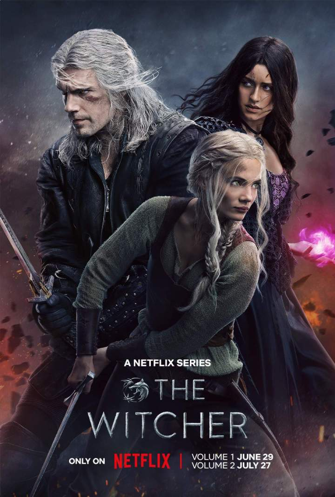

ic_fluent_movies_and_tv_24_regular Created with Sketch. Movie John Wick 4 Action movie about John Wick
ic_fluent_movies_and_tv_24_regular Created with Sketch. Movie Heart Of Stone Action movie about a spy
ic_fluent_movies_and_tv_24_regular Created with Sketch. Movie Freaks Out Science-fiction and superpowers in WWII
ic_fluent_movies_and_tv_24_regular Created with Sketch. Movie Vesper A lost world where food is scares! Thrilling sci-fi and great visuals
 Series The Witcher Season 4 Series about Geral Of Rivia trying to find his ward from the law of surprise
ic_fluent_movies_and_tv_24_regular Created with Sketch. Movie Le Jardinier Muscles from Brussels are back! Comedy packed with humor and nostalgie